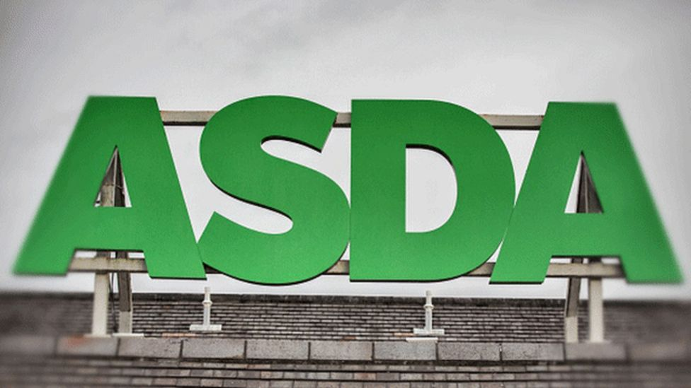

Asda bug exposed online shopping payment details
By Jane Wakefield
Technology reporter

19 January 2016

A flaw on supermarket Asda's website gave hackers the chance to collect customers' personal information and payment details, the BBC has learned.
The US-owned retail firm, which processes hundreds of thousands of online orders each week, could have put millions of transactions at risk, security expert Paul Moore estimates.
He first noticed the issue in March 2014 and contacted Asda to report it.
Asda said it had now fixed the problem and no customers had been affected.
The firm, whose website is run by US retail giant Walmart, told the BBC: "Asda and Walmart take the security of our websites very seriously. We are aware of the issue and have implemented changes to improve the security on our website."
"The points flagged pose a low risk to customers and our monitoring of these security issues indicate that no customer information has been compromised over that two-year period."
Since Mr Moore went public with the informationit has acted to improve its security.
"The small risk to customer information has been removed and an update has been applied, we're now adding further enhancements which will be completed by this evening. In short, one of the two issues is fixed but nothing that remains poses any risk to any customer information or card details," it told the BBC.
The issue occurred because of two well-known exploits, cross-site scripting (XSS) and cross-site request forgery (CSRF), which combined, can offer hackers access to all the information users put on the site, said Mr Moore.
It means that - if someone had both the Asda website open and another site that is infected with malware - they could be vulnerable to attack.
"CSRF exploits the trust a site has in the user's browser, allowing an attacker to issue requests on your behalf and from your own PC. XSS allows an attacker to embed malicious content into the page to alter anything and everything the user can see," he explained.
Asda is by no means alone in having a website open to these security flaws but Mr Moore believes that it should have acted more quickly to rectify the problem.
"Back in March 2014, I contacted Asda to report several security vulnerabilities and despite a fix promised 'in the next few weeks', little appears to have changed," he said.
"Asda also failed to issue adequate security headers which help mitigate the risk by instructing the browser to discard content which ASDA deem malicious or unnecessary. The majority of modern browsers support content security policy (CSP) which effectively blocks this type of attack, but very few sites adopt this technique," he added.
When he published his blog, he advised users "to shop elsewhere".
"Asda/Walmart have had ample opportunity to fix these issues and have failed to do so. If you must continue shopping with Asda, open a private window and do not open any other tabs or windows until you've logged out," he added.
Open tabs
Prof Alan Woodward, a security expert from the University of Surrey, said that Asda's assertion that its site is secure is correct but that does not mean that users are not at risk.
"Cross-site scripting can easily be exploited by hackers if someone has a website open that has this malware embedded at the same time as they are shopping online and the shopping site has not protected the data entry fields appropriately," he said.
"Most people do have dozens of tabs open at any given time."
He did not go as far as suggesting people stop shopping there but added: "I think I'd play safe and make sure you have only one tab open just in case one of your other sites is infected."
"This is an example of of how companies need to look beyond the boundaries of their own website. This is a common exploit but it can be very easily fixed. It is half a line of code that can fix it," he added.
There are scanners available online that can immediately tell whether websites have the correct security headers.
One such site that scans the web for such headers found that, out of the million most popular websites, only 1,365 sites had them in place.
Related Topics
Asda Cyber-securityShare this story About sharing